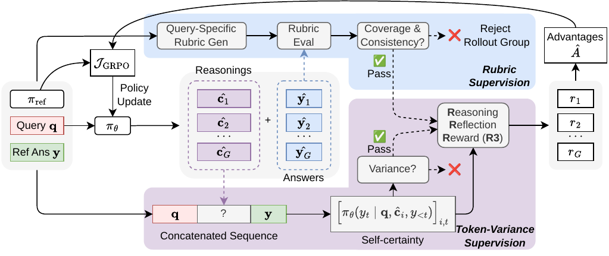
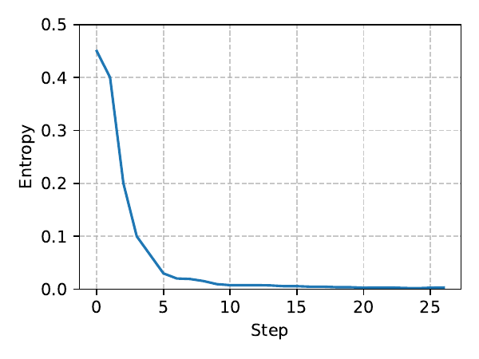
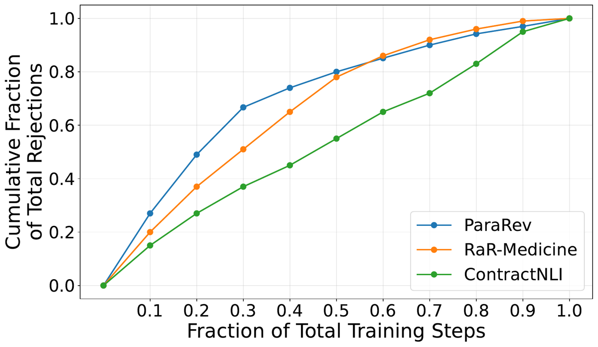

TL;DR. DRO = GRPO sur tâches non vérifiables mais ancrées sur une réponse de référence, avec (i) un reward dense token-level R3 = certitude du modèle sur les tokens de la référence conditionnée au CoT échantillonné, pondérée par la variance cross-rollout de chaque token, et (ii) des rubriques converties en contraintes dures accept/reject au niveau du groupe de rollouts (jamais en reward scalaire), plus un filtre de queries par variance.
Claim principal. Sur 4 datasets (ParaRev, RaR-Medicine, ContractNLI, FinQA), le pipeline complet bat toutes les baselines RL à modèle de base et algorithme identiques (ex. ParaRev 63,7 % WR vs base contre 55,9 % pour la meilleure baseline rubrique) [Tab. 1], atteint une performance comparable en 2–3× moins de steps que l'agrégation naïve de self-certainty [Tab. 2], et augmente la satisfaction des rubriques sur queries held-out (ParaRev 46,2 % → 81,4 %) sans que les rubriques entrent dans le gradient [Tab. 10]. Aucun juge externe ni reward model : rubriques générées et jugées par la reference policy elle-même [§1, §3.1].
Origine des tâches. Aucune tâche construite par les auteurs : 4 corpus publics existants repris tels quels, avec adaptation du contexte pour ParaRev [App. « Datasets and Metrics »].
| Dataset | Domaine | # échantillons | Input moy. (tok.) | Output moy. (tok.) | Métrique |
|---|---|---|---|---|---|
| ParaRev | Écriture scientifique | 12K | 4 212 | 258 | Pairwise win rate (juge LLM) |
| RaR-Medicine | Médecine | 20K | 205 | 116 | Rubric win rate (juge LLM) |
| ContractNLI | Contrats juridiques | 330 | 3 815 | 1 204 | Macro-F1 |
| FinQA | Finance | 8 281 | 1 158 | 6 | math-verify, tol. 0,001 |
[Tab. 3, tokenizer Qwen3]
Pipeline de construction (seule construction réelle : ParaRev). ParaRev [Jourdan et al. 2025] = 48K paires paragraphe original/révisé + reviews → les auteurs se limitent à la révision initiale, relocalisent chaque paragraphe dans les papiers bruts et extraient le contexte précédent/suivant depuis CASIMIR [Jourdan et al. 2024] → 12K échantillons, split 80/20 [App. « Datasets and Metrics »]. ContractNLI : 607 contrats annotés × 17 hypothèses fixes, sortie reformatée en schéma JSON contenant les 17 prédictions + les evidences justificatives [ibid.]. ⚠️ Écart non expliqué : le texte annonce 607 contrats, la Tab. 3 annonce 330 échantillons, et §4.5 parle de « 200 sur 330 ». Le passage 607 → 330 est non précisé.
Volume et distribution de difficulté. Volumes ci-dessus. Aucune caractérisation de la difficulté (pas de pass@k du modèle de base, pas de strates) — non précisé.
Filtrage. Pas de filtrage par pass@k. Le seul filtrage est le filtre de variance (§3.2) : une passe offline sur tout le corpus sous la reference policy, score de groupe σ̄_G = moyenne des écarts-types cross-rollout sur les 10 % de tokens de plus forte variance, on garde le top q≈10 % « plus une petite fraction additionnelle pour préserver les cas durs ». Rétentions effectives : 18 % / 16 % / 60,6 % (200 sur 330) / 12,5 % sur ParaRev / RaR / ContractNLI / FinQA [§4.5, Tab. 4].
⚠️ « q≈10 % plus une petite fraction » aboutit en fait à 18 % sur ParaRev, soit +80 % relatif : la « petite fraction » n'est pas petite, et la règle de sélection de cette fraction est non précisée.
Curriculum. Aucun curriculum explicite. Un seul mécanisme dynamique : les queries dont le groupe est rejeté par les rubriques ne sont pas retirées du training set et sont revisitées aux epochs suivantes [§3.1, §4.4]. Fractions de rejet cumulées : 19,6 % / 10,4 % / 7,2 % sur ParaRev / RaR / ContractNLI [§4.4].
Contamination et séparation train/test. Splits d'origine respectés, un modèle entraîné par dataset [App. « Datasets and Metrics »]. Aucune analyse de contamination — alors que ContractNLI (2021) et FinQA (2021) sont antérieurs à Qwen3 et très plausiblement dans son pré-entraînement. C'est un trou net.
Données SFT/IFT avant RL. Aucune : RL direct sur le modèle instruct. Le SFT n'apparaît que comme baseline concurrente (et il dégrade : ParaRev 43,1 vs base 50,0) [Tab. 7].
Coût humain. Aucune annotation nouvelle. Les seules interventions humaines rapportées : (i) ranking manuel de 16 rollouts sur une query ParaRev pour la case study [§3.1.1] ; (ii) inspection manuelle de « quelques dizaines de queries » pour calibrer la simulation et estimer la fraction de tokens reasoning-reflective [App. « Simulation Setup »]. Aucune heure-expert chiffrée.
⚠️ Il n'y a pas d'environnement au sens agentique. Pas d'outils, pas de sandbox, pas de multi-turn. « L'environnement » se réduit à une boucle de génération single-turn + une machinerie de scoring. Je détaille quand même la machinerie, qui est la partie réutilisable.
Observation. Un prompt unique : query + description de tâche + contexte long (ParaRev : contexte du papier + commentaires des reviewers + paragraphe à réviser ; ContractNLI : contrat complet + 17 hypothèses). Longueurs Tab. 3 (jusqu'à ~4,2K tokens en moyenne). Pas de chat template pendant l'entraînement, suivant [Liu et al. 2025] [App. « Training and Inference Settings »].
Espace d'actions et outils. Une seule action : produire une complétion CoT + réponse finale. Aucun outil — pas de retrieval, pas d'exécution de code, pas d'appel externe. Formats de sortie : texte libre (ParaRev, RaR), JSON à 17 champs + evidences (ContractNLI), nombre (FinQA).
Single-turn / multi-turn. Single-turn, horizon = 1. Longueur max de génération non précisée ; on sait seulement que les complétions tronquées sont masquées dans la loss [App. « Training and Inference Settings »]. Longueur moyenne à l'inférence : 1,9K / 1,2K / 1,9K tokens (CoT+réponse) pour DRO contre 0,9K / 0,8K / 2,7K pour le modèle de base [Tab. 5] — donc DRO allonge le CoT sur ParaRev et RaR mais le raccourcit fortement sur ContractNLI (2,7K → 1,9K).
Exécution. Pas de sandbox ni de simulateur. Trois passes par step, toutes sur vLLM :
1. rollouts : G = 16 complétions par query, température 1,0, top_p 0,95 [App. « Training and Inference Settings »] ;
2. scoring R3 : passe de teacher-forcing calculant π(y_j | q, ĉ_i, y_<j) pour chaque token de la référence sous chacun des 16 préfixes CoT. Le pipeline principal remplace la réponse échantillonnée par la référence (« slicing »), ce qui suppose un délimiteur <think> ou \boxed{} [App. « Ablation: R3 Without CoT/Answer Slicing »] ;
3. rubriques : génération (une fois par query) + jugement (par rollout) par la reference policy, via vLLM [§3.1, App. « Training and Inference Settings »].
Déterminisme / reset / timeouts : non précisés (sans objet ici, pas d'exécution externe).
Gestion des erreurs et des sorties mal formées. Deux mécanismes seulement : masquage des complétions tronquées, et le fait que le juge rubrique répond « No » en cas d'ambiguïté ou d'incertitude (« err on the side of No for binary clarity ») [App. « Rubric-gating Prompts »]. Aucune mention de parsing JSON échoué sur ContractNLI, ni de retry, ni de pénalité de format.
Ablation notable sur le harness. Supprimer le slicing (utiliser la complétion complète CoT+réponse comme préfixe) ne change quasiment rien : ParaRev 57,5 vs 57,8 ; RaR 54,3 vs 54,2 [Tab. 8]. Conséquence pratique : R3 s'applique à un modèle sans délimiteur CoT explicite.
Exemple de trajectoire. Le papier donne un exemple illustré [Fig. 2] plutôt qu'une trajectoire brute. Sur une query ParaRev (réviser un paragraphe d'après des commentaires de reviewers, dont tous ne sont pas pertinents), 16 rollouts sont échantillonnés puis classés manuellement ; deux sont montrés : Reasoning A identifie correctement que la Section 4 (overview) a été déplacée plus tôt et restructure le paragraphe, avec omission mineure des numéros de section ; Reasoning B abandonne. L'agrégat naïf de self-certainty préfère B à A, à cause de la faible certitude de A sur le token « 2 » ; R3 rétablit le bon ordre en sur-pondérant des tokens à fort σ comme « gives », « existing » et « . » [Fig. 2, légende]. ⚠️ Aucune trajectoire complète (prompt + CoT + réponse) n'est recopiée dans le papier.
Type. Reward intrinsèque ancré sur référence : ni exact match, ni tests, ni reward model, ni juge externe. Formulation [Éq. 2, §3.2] :
r_i^R3 = Σ_j [ softmax_ω(σ_j) ] · clip( π(y_j | q, ĉ_i, y_<j), λ_low, λ_high )
avec σ_j = écart-type de la self-certainty du token j à travers les CoT échantillonnés du groupe, ω température de netteté.
Trois choix de design, chacun justifié :
- Échelle probabilité et non log-probabilité : les tokens de très faible probabilité (< 0,01), typiquement dus à des désalignements de style/format, induisent une variance bruitée énorme en log (−4 à −25) pour des variations de probabilité négligeables [§3.1.2].
- Softmax plutôt que normalisation directe de la pondération : évite une concentration trop brutale sur les tokens reasoning-reflective, et laisse ω moduler l'intensité [§3.2].
- Clipping [λ_low, λ_high] : les tokens à probabilité stable haute (≳ 0,85) sont déjà prédits et leurs micro-fluctuations ne feraient que dé-pondérer les tokens mid-range informatifs ; ceux à probabilité stable basse (≲ 0,05) sont du bruit lexical/stylistique [§3.2, Tab. 4].
Justification analytique de la dilution. Avec moyenne sur t tokens de référence, la contribution d'un petit sous-ensemble informatif au z-score GRPO décroît en 1/√t sous bruit indépendant et en 1/t sous corrélation positive [App. « Plain Aggregation… », dérivation complète]. La fraction de tokens reasoning-reflective est estimée à ≈ 2–3 %, souvent < 1 % pour ContractNLI [§3.1.2] — mais cette estimation vient d'une inspection manuelle de quelques dizaines de queries, pas d'une mesure tabulée [App. « Simulation Setup »].
Granularité. Outcome-level au sens où un seul scalaire par rollout alimente l'avantage GRPO, mais dense en construction (somme pondérée sur tous les tokens de la référence). Crédit continu, pas binaire.
Termes additionnels. Aucun terme de format, de longueur, ni de pénalité explicite dans le reward. Régularisation d'entropie β = 0,001 dans l'objectif (voir §4).
Preuve que ce n'est pas du SFT déguisé. Démonstration formelle [App. « GRPO with the self-certainty reward is not equivalent to SFT »] : le gradient policy-gradient porte uniquement sur ∇log π(ĉ | q) (tokens de CoT), le gradient SFT sur ∇log π(y*_j | ·) (tokens de réponse en teacher forcing) ; statistiques suffisantes disjointes, donc non équivalents. Et le terme sur les réponses échantillonnées s'annule par l'identité du score function. ✅ Argument correct et utile.
Diagnostic anti-hacking lexical. ROUGE-L F1 contre la référence : base 56,4 / 18,5 / 38,1, RL-F1 (baseline qui optimise explicitement ROUGE) 77,2 / 26,9 / 76,4, DRO 61,7 / 22,1 / 46,2 sur ParaRev / RaR / ContractNLI [Tab. 6]. DRO gagne fortement en win rate sans dériver vers la copie de surface. ✅ C'est la bonne façon de tester qu'un reward de similarité ne se fait pas hacker par la similarité.
Principe (contrained RL). Les rubriques ne sont jamais un reward. Pour chaque query, la reference policy propose un jeu compact de rubriques yes/no (max 10) ; on vérifie que la référence satisfait chacune pour écarter les contraintes mal posées [§3.1]. Puis deux portes sur le groupe de rollouts :
- Coverage gate : chaque rubrique doit être satisfaite par au moins μ rollouts du groupe (μ = 1) ;
- Consistency gate : les ρ % meilleurs rollouts selon r^R3 (ρ = 25 %) doivent chacun satisfaire au moins ν % des rubriques (ν = 60 %).
Si une porte échoue, tout le groupe est rejeté (pas d'update), mais la query reste dans le training set et revient plus tard [§3.1, Tab. 4].
Fiabilité du vérifieur. ❌ Non mesurée. Aucun accord inter-annotateur, aucun taux de faux positifs/négatifs, aucune validation contre des humains — ni pour le juge de rubriques (reference policy) ni pour le juge d'évaluation (o4-mini). C'est la faiblesse la plus importante du papier vu mon objectif.
Si juge LLM : prompts recopiés. Les deux prompts système sont donnés intégralement [App. « Rubric-gating Prompts of DRO »]. Éléments structurants du prompt de génération de rubriques :
Role: expert evaluator tasked with generating most essential guardrail rubrics. Entrées : Query with Task Description + Ground-Truth Response. Sortie : tableau JSON, max 10 items
{"id": n, "rubric_item": "..."}. Exigences par item : (1) binaire et vérifiable (Yes/No par inspection de la réponse) ; (2) spécifique à la query et à la ground truth — peut encoder entités, valeurs, étapes, structures présentes dans la référence ; doit être satisfaite par la ground truth ; ne doit pas référencer « the ground-truth » ou « the example answer » ; ne doit pas introduire de contraintes non attestées par la référence ; (3) atomique (une seule propriété, pas de bundling) ; (4) objective — interdiction de « good, high-quality, clear, appropriate, useful, detailed » sauf converti en condition mesurable ; ignorer les traits purement stylistiques sauf exigence explicite ; (5) evaluator-consistent (deux évaluateurs indépendants doivent converger) ; (6) non chevauchantes. Dérivation en 5 étapes : analyser la tâche → extraire les dimensions clés de la référence → prioriser l'essentiel (garder ce qui attrape des erreurs critiques, comme des guardrails) → valider la conformité aux exigences → check de cohérence globale (la référence satisfait toutes les rubriques simultanément, pas de rubriques contradictoires).
Éléments structurants du prompt de jugement :
Entrées : Query + Model Response + Rubric JSON. Principes : indépendance entre items, objectivité (preuve observable uniquement), décision binaire sans crédit partiel, interprétation stricte, response-only focus. Répondre Yes si le critère est clairement et sans ambiguïté satisfait, la preuve le soutient directement, et tout évaluateur raisonnable conclurait pareil. Répondre No si le critère n'est pas rempli, si la preuve est ambiguë ou insuffisante, si la réponse ne satisfait que partiellement, ou en cas d'incertitude (« err on the side of No for binary clarity »). Pièges à éviter : ne pas être indulgent à cause de la qualité globale ; ne pas inférer l'intention ; ne pas laisser un jugement antérieur biaiser le suivant ; pas de crédit pour un « presque ». Sortie :
[{"id": 0, "satisfied": true, "justification": "..."}, ...].
⚠️ Le biais « No par défaut » rend la porte conservatrice : il augmente les rejets de groupe, donc le coût, et peut écarter des groupes valides. Non quantifié.
Robustesse / attaques. Aucune attaque adversariale du vérifieur. Les auteurs reconnaissent explicitement un risque résiduel : « R3 can in principle reward a flawed CoT that nonetheless raises reference-token probability. DRO mitigates but does not fully eliminate this structural risk » [§5].
Comparaison avec la baseline rubrique (RLER). ⚠️ Asymétrie de moyens à noter : la baseline RLER utilise GPT-5 pour générer des rubriques graduables positives/négatives et GPT-4o comme juge sur échelle [0,2], agrégées par moyenne [App. « Evaluation Baseline: RL from Rubrics as Rewards »], alors que DRO n'utilise que sa propre reference policy. DRO gagne malgré des moyens plus faibles — ce qui renforce le claim, et rend l'écart de coût encore plus favorable.
Algorithme. GRPO [Shao et al. 2024], objectif complet en [App. « GRPO Objective »]. Modifications par rapport au GRPO standard :
- loss de [Liu et al. 2025] (Dr. GRPO-like) avec rewards scalés et masquage des complétions tronquées ;
- clipping asymétrique : ε_high = 0,2 (valeur de ε_low non précisée) ;
- règle 80/20 [Wang et al. 2025] appliquée par-dessus R3 : les updates de policy gradient sont restreintes aux tokens de CoT de plus forte entropie, top-ρ fraction avec ρ ∈ [0,3 ; 0,5] selon dataset. Les auteurs soulignent que les deux mécanismes sont orthogonaux : le 80/20 sélectionne des tokens de CoT par entropie pour du masquage de gradient, R3 sélectionne des tokens de réponse de référence par variance cross-rollout pour du reward shaping [§3.2] ;
- β = 0,001 (régularisation d'entropie) au lieu du β = 0 habituel, « améliore stabilité et convergence » [App. « Training and Inference Settings »].
⚠️ Ambiguïté de notation : β désigne le coefficient KL dans l'Éq. 4 [App. « GRPO Objective »] mais est décrit comme « entropy regularization » dans le setup. Le coefficient KL effectif et la politique de référence du KL sont donc non précisés — point à clarifier avant réplication.
Hyperparamètres.
| Paramètre | Valeur | Source |
|---|---|---|
| Batch par step | 16 samples | App. Training |
| Taille de groupe G | 16 rollouts/query | App. Training |
| Température (train) | 1,0 ; top_p 0,95 | App. Training |
| Température (inférence) | 0,6 ; top_p 0,95 | App. Training |
| Learning rate | 5,0 × 10⁻⁷ | App. Training |
| Scheduler | constant-with-warmup, warmup ratio 0,2 | App. Training |
| ε_high | 0,2 | App. Training |
| β | 0,001 | App. Training |
| 80/20 top-ρ (tokens CoT) | 0,3–0,5 | App. Training |
| R3 : ω | 1–2 (par dataset) | Tab. 4 |
| R3 : λ_low / λ_high | ≲ 0,05 / ≳ 0,85 | Tab. 4 |
| Rubric gate : μ / ρ / ν | 1 / 25 % / 60 % | Tab. 4, §4.4 |
| Filtre variance : q | 10 % (top tokens : top 10 % par σ) | §3.2, Tab. 4 |
| Sélection de checkpoint | meilleur validation reward | App. Training |
| Longueur max de génération | non précisé | — |
| Nombre de steps | non précisé globalement ; Tab. 2 donne 96–384 steps selon méthode/dataset | Tab. 2 |
| Seeds | non précisé (aucun multi-seed) | Checklist |
Stabilité. Trois instabilités documentées et corrigées :
1. Sans gating, collapse en mode « no-revision » sur ParaRev, entropie → ~0 en ~10 steps [App. « No-Revision Mode Collapse », Fig. 6] → corrigé par rubric-gating.
2. Amplification spurious des z-scores quand la variance intra-groupe est faible, provoquant un collapse tardif — légèrement plus tôt pour R3 que pour Avg Prob, parce que sa pondération comparative amplifie justement les z-scores [App. « Faster Learning with R3 »] → corrigé par le filtre de variance.
3. ω > 4 sur-affûte le softmax sur un sous-ensemble minuscule de tokens et amplifie le bruit → on reste à ω ∈ [1,2] [§4.3].
Abandonné après essai. Rubric-as-reward (somme pondérée 0,5·Rubric + 0,5·R3) : plus mauvais que le gate et ne prévient pas le collapse no-revision [Tab. 9].
Compute. 3 nœuds × 8 A100, stack HuggingFace TRL + DeepSpeed + vLLM [App. « Training and Inference Settings »]. Débits et coûts en §6.
Dynamique. Trois courbes seulement : entropie qui s'effondre sans gating [Fig. 6] ; probabilité moyenne des tokens plus haute et convergence plus précoce/stable avec filtre de variance [Fig. 7] ; fraction cumulée de rejets rubrique qui s'aplatit [Fig. 5]. ⚠️ Aucune courbe de reward, aucune courbe de score downstream vs steps, aucune courbe de longueur de réponse — alors que le claim « 2–3× plus rapide » repose entièrement sur des nombres de steps tabulés sans courbe sous-jacente.
Cas 1 — Collapse « no-revision » (ParaRev, le cas central). - Comportement : le modèle converge vers un équilibre dégénéré où il ne révise plus rien tout en recevant un reward dense élevé. Quand aucune édition efficace n'est trouvée, ne rien changer maximise la self-certainty sur la référence [App. « No-Revision Mode Collapse »]. Plus généralement, des groupes de rollouts dont toutes les réponses ne font aucune révision reçoivent quand même des avantages distinguables, car la standardisation groupwise amplifie des différences spurious entre rollouts uniformément mauvais [§3.1]. - Détection : inspection des sorties + effondrement de l'entropie de policy vers ~0 après une brève phase exploratoire [Fig. 6]. - Correction : rubric-gating — rejeter les groupes dont toutes les réponses échouent aux critères de base, ce qui empêche des trajectoires « high-certainty mais content-free » de contribuer au gradient [§3.1, §4.4]. - ✅ C'est le failure mode le plus instructif du papier : il montre qu'un reward d'ancrage sur référence récompense l'inaction dès que l'action est difficile.
Cas 2 — Amplification spurious des z-scores à faible variance intra-groupe. - Comportement : avec un reward dense et une standardisation groupwise, de très petites différences absolues sont amplifiées en avantages larges, déstabilisant les updates ; collapse en fin d'entraînement [§3.2, App. « Faster Learning with R3 »]. - Détection : dégradation tardive des performances downstream quand gating et filtre sont désactivés. - Correction : filtre de variance des queries (scoring offline sous la reference policy, rétention 12,5–18 % hors ContractNLI). Les auteurs insistent : « quality (high-variance groups) beats quantity » — entraîner sur le corpus complet dégrade [§4.5].
Cas 3 — Bruit des tokens à très faible probabilité (hacking par le style). - Comportement : en échelle log, des tokens à probabilité < 0,01 (désalignements de style/format) produisent une variance énorme (−4 à −25) pour des changements de probabilité négligeables, et dominent le reward [§3.1.2]. - Détection : simulation Monte Carlo (5 000 essais par config) montrant que la moyenne de log-prob corrèle le plus mal avec les z-scores des tokens reasoning-reflective [Fig. 3, App. « Simulation Setup »]. - Correction : travailler en échelle probabilité + clipping bas. Ablation isolée : clipping seul = +0,8 / +1,1 / +1,0 / −0,1 sur ParaRev / RaR / ContractNLI / FinQA par rapport à Avg Prob [Tab. 8 « ω et clipping »].
Cas 4 — Sur-affûtage du softmax. ω > 4 concentre le reward sur une poignée de tokens et magnifie le bruit [§4.3]. Corrigé par borne empirique ω ∈ [1,2].
Cas 5 — Hacking lexical (non observé, testé). ROUGE-L de DRO reste très en deçà de la baseline RL-F1 [Tab. 6] : le modèle ne converge pas vers la copie de la référence. ✅ Test explicite, bon réflexe.
Risque résiduel reconnu. « Like all self-certainty-based RL, R3 can in principle reward a flawed CoT that nonetheless raises reference-token probability » [§5]. Aucune mesure de la fréquence de ce cas.
Comportement émergent. Non documenté comme tel. Le seul signal indirect est la longueur : DRO allonge le CoT sur ParaRev/RaR (0,9K→1,9K, 0,8K→1,2K) et le raccourcit sur ContractNLI (2,7K→1,9K) [Tab. 5] — les auteurs ne commentent pas cette asymétrie. ⚠️ Sur une tâche juridique structurée, un RL qui raccourcit le raisonnement de 30 % mérite un examen que le papier ne fait pas.
⚠️ Ce qui manque : aucun failure mode du juge de rubriques n'est documenté. Or les rubriques sont générées à partir de la référence, jugées par le même modèle, et servent de porte : si le modèle de référence a un angle mort, il est invisible pour tout le pipeline. Aucun test n'adresse ce point.
Débit et mémoire [Tab. 5, ParaRev / RaR / ContractNLI, 3 nœuds × 8 A100] :
| Métrique | DRO | Avg Prob (baseline) | Base |
|---|---|---|---|
| Throughput entraînement (samples/h) | 108 / 135 / 112 | 122 / 141 / 130 | — |
| Peak GPU mem (GB/nœud) | 78,6 / 79,1 / 78,4 | 78,4 / 79,4 / 78,2 | — |
| GPU-heures totales pour perf comparable | 370 / 382 / 624 | 1008 / 728 / 945 | — |
| Tokens de complétion à l'inférence | 1,9K / 1,2K / 1,9K | 1,7K / 1,2K / 1,8K | 0,9K / 0,8K / 2,7K |
Lecture : le surcoût par step est réel mais modeste (throughput −11 % à −14 %, mémoire identique), et il est largement compensé par le filtre de variance → 1,5–2,7× moins de GPU-heures au total. Aucun surcoût à l'inférence.
Sync vs async, parallélisme. Non précisé. On sait seulement que vLLM porte à la fois les rollouts, le calcul de R3 et la génération/jugement des rubriques [App. « Training and Inference Settings »].
Goulots d'étranglement. Non analysés explicitement. Par construction, trois passes forward par step : rollouts (16 × génération longue), scoring R3 (teacher forcing de |y| tokens × 16 préfixes), rubriques (1 génération + 16 jugements). Le delta de throughput de ~12 % suggère que le scoring R3 et les rubriques sont relativement bon marché face aux rollouts — mais ce n'est pas décomposé.
Coût par step / par rollout. Non rapporté directement ; déductible approximativement des lignes throughput (108 samples/h sur ParaRev avec 24 A100).
Coût de la passe de filtrage offline. Non précisé — or scorer 12K queries × 16 rollouts une fois sous la reference policy n'est pas négligeable et n'apparaît pas dans les 370 GPU-heures annoncées. ⚠️ Le chiffre de GPU-heures est donc probablement optimiste.
| Chiffre annoncé | Où il est annoncé | Source dans le papier | Verdict |
|---|---|---|---|
| « across four datasets […] outperforms strong baselines » | Abstract | Tab. 1 : ParaRev 63,7 vs 55,9 (max baseline) ✓ ; RaR 57,6 vs 53,4 ✓ ; ContractNLI 84,5 vs 78,2 ✓ ; FinQA 68,4 vs 69,0 (row #2) ✗ | sur-généralisé — vrai sur 3 datasets/4 ; sur FinQA la baseline row #2 est devant, même si la note ¹ la requalifie en oracle/upper bound |
| « Across all four datasets, DRO attains the best performance with clear margins over every RL baseline (rows #2–#5) » | §4.2 | Tab. 1 : sur FinQA, row #2 = 69,0 > row #8 = 68,4 | contredit (68,4 vs 69,0). La phrase suivante du même paragraphe dit d'ailleurs « DRO approaches RL with an oracle correctness reward » — incohérence interne au §4.2 |
| « reaches comparable performance up to 2–3× faster » | §1, Abstract (« faster, more sample-efficient ») | Tab. 2 : 288→96 = 3,0× ; 256→128 = 2,0× ; 320→208 = 1,54× ; 384→320 = 1,2× | confirmé pour la formulation « up to » (3,0× et 2,0× atteints) |
| « R3 reaches comparable performance in 2–3× fewer steps on ParaRev, RaR and ContractNLI » | §4.3 | Tab. 2 : ContractNLI 320→208 = 1,54×, hors de l'intervalle annoncé | contredit (1,54× vs « 2–3× ») |
| « 1,5–2,7× fewer total GPU-hours » | Légende Tab. 5 | Tab. 5 : 1008/370 = 2,72 ; 728/382 = 1,91 ; 945/624 = 1,51 | confirmé |
| « satisfies rubric-based feasibility constraints » | §1 | Fig. 5 : courbe qui s'aplatit sur ParaRev et RaR ; quasi-linéaire sur ContractNLI (« limited improvement », légende Fig. 5). Tab. 10 held-out : 46,2→81,4 ; 51,7→77,6 ; 76,3→87,2 | sur-généralisé — la satisfaction progressive en cours d'entraînement n'est démontrée que sur 2 datasets/3 ; le held-out progresse sur les 3 |
| « exhibits cross-dataset knowledge transfer » / « +2,1 pour Qwen3-4B et +0,6 pour Qwen3-14B » | §1, §4.2 | App. « Transferability » : 42,8→44,9 et 48,7→49,3 | confirmé numériquement. ⚠️ +0,6 sans aucune barre d'erreur, sur un seul run : non interprétable |
| « the latter already near GPT-4.1 level on HealthBench » | §4.2, App. Transferability | Aucun score GPT-4.1 nulle part dans le papier | introuvable |
| « still improves over the base on ParaRev (57,4 %) and RaR (55,1 %), with smaller magnitudes than under the GT reference (63,7 % / 57,6 %) » | §4.2 | Tab. « Robustness to Reference Quality » : 57,4 / 55,1 et 63,7 / 57,6 ✓ | confirmé. ⚠️ Le même tableau donne « Claude reference vs Base = 58,9 / 56,5 » : DRO entraîné sur référence Claude (57,4/55,1) reste en dessous de la référence elle-même — non commenté par les auteurs |
| « the filter retains only 18 %, 16 %, 12,5 % […] et 200 sur 330 sur ContractNLI » | §4.5 | Tab. 4 : 18 % / 16 % / 60,6 % / 12,5 % ; 200/330 = 60,6 % ✓ | confirmé |
| « rejection fractions: 19,6 % / 10,4 % / 7,2 % » | §4.4 | Aucun tableau ni figure ne les reprend (Fig. 5 est en fraction cumulée, normalisée à 1) | introuvable (annoncé dans le corps, non traçable) |
| « fraction of reasoning-reflective tokens ≈ 2–3 %, frequently < 1 % for ContractNLI » | §3.1.2 | App. « Simulation Setup » : inspection manuelle de « tens of queries », aucune mesure tabulée | introuvable (estimation qualitative présentée comme chiffre) |
| « keep the top fraction (q ≈ 10 %) plus a small additional fraction » | §3.2 | Tab. 4 : rétentions réelles 18 % / 16 % / 60,6 % / 12,5 % | contredit en pratique pour ContractNLI (60,6 %) ; « small additional fraction » = +8 pts (+80 % relatif) sur ParaRev |
| « eliminating any reliance on external judges or reward models » | §1 (contributions) | §3.1 + App. Training : rubriques générées et jugées par la reference policy ✓ | confirmé pour l'entraînement. ⚠️ L'évaluation, elle, dépend d'un juge externe (o4-mini) |
Bilan 7.0 : 5 confirmés, 3 contredits, 3 sur-généralisés, 3 introuvables. Les contradictions ne sont pas cosmétiques (FinQA, ContractNLI 1,54×) mais elles jouent sur des cas secondaires ; le cœur (ParaRev, RaR) tient. → case coherence = fausse.
| # | Méthode | ParaRev (WR vs base) | RaR-Med (WR vs base) | ContractNLI (Macro-F1) | FinQA (Acc.) |
|---|---|---|---|---|---|
| 1 | Base | 50,0 | 50,0 | 68,1 | 58,1 |
| 2 | RL-F1 (ROUGE-L ; oracle correctness sur FinQA) | 40,8 | 46,7 | 73,4 | 69,0¹ |
| 3 | Avg Logprob (VeriFree) | 49,5 | 48,0 | 73,6 | 66,4 |
| 4 | Avg Prob (RLPR) | 54,3 | 52,3 | 78,2 | 66,8 |
| 5 | Rubric reward (RLER) | 55,9 | 53,4 | 75,4 | —² |
| 6 | R3 seul | 57,8 | 54,2 | 80,6 | 67,1 |
| 7 | R3 + rubric gate | 61,6 | 56,1 | 80,8 | —² |
| 8 | DRO complet (+ filtre variance) | 63,7 | 57,6 | 84,5 | 68,4 |
[Tab. 1] ¹ reward oracle de correction, à lire comme borne supérieure. ² méthodes à rubriques non appliquées à FinQA (réponses courtes vérifiables).
Écarts absolus clés : DRO − meilleure baseline RL = +7,8 (ParaRev, vs #5), +4,2 (RaR, vs #5), +6,3 (ContractNLI, vs #4), −0,6 (FinQA, vs #2 oracle). DRO − base = +13,7 / +7,6 / +16,4 / +10,3.
Décomposition des contributions (lignes 4 → 8) : passage Avg Prob → R3 = +3,5 / +1,9 / +2,4 / +0,3 ; R3 → +gate = +3,8 / +1,9 / +0,2 ; +gate → +filtre = +2,1 / +1,5 / +3,7. Les trois ingrédients contribuent, avec hiérarchie dépendante du dataset : le gate est décisif sur les tâches ouvertes (ParaRev, RaR), inopérant sur ContractNLI (+0,2), où c'est le filtre de variance qui porte (+3,7).
Baselines non-RL [Tab. 7] : SFT sur la référence = 43,1 sur ParaRev (pire que la base à 50,0) et 49,7 sur RaR ; distillation on-policy depuis Qwen3-235B-A22B (GKD) = 53,6 / 53,1 ; DRO = 63,7 / 57,6. ✅ Point fort du papier : la même référence, exploitée en RL, extrait beaucoup plus de signal qu'en imitation directe — et un professeur 17× plus gros ne rattrape pas.
| Ablation | Résultat | Source |
|---|---|---|
| ω et clipping isolés | Avg Prob 54,3/52,3/78,2/66,8 → clip seul (ω=0) 55,1/53,4/79,2/66,7 → clip + ω>0 57,8/54,2/80,6/67,1 | Tab. « ω et clipping » |
| Rubric-as-reward vs rubric-as-gate | Rubric reward seul 55,9/53,4 ; R3 seul 57,8/54,2 ; R3 + rubric reward 54,6†/52,1 ; R3 + gate 63,7/57,6 | Tab. 9 |
| Slicing CoT/réponse | avec 57,8/54,2 ; sans 57,5/54,3 → non essentiel | Tab. 8 |
| Filtre variance : token-selective (DRO) vs all-token (RLPR) | pas de filtre 57,8/54,2 ; RLPR 58,6/55,2 ; DRO 59,8/55,7 | Tab. 11 |
† Le variant rubric-as-reward tombe dans le collapse no-revision sur ParaRev, et il est pire que chacun des deux signaux pris seuls (54,6 < 55,9 et < 57,8). ✅ C'est l'ablation la plus convaincante du papier : elle isole exactement la thèse « contrainte ≠ reward » et montre que mélanger les deux signaux en un scalaire est activement nuisible, pas seulement sous-optimal.
Quasi rien. Deux tailles de modèle apparaissent (Qwen3-4B et Qwen3-14B) uniquement dans l'expérience HealthBench [App. « Transferability »], avec un gain qui décroît avec la taille (+2,1 → +0,6) — que les auteurs attribuent au headroom plus faible. Aucun scaling en nombre de tâches, en compute, ni en taille de groupe. La config d'entraînement de Qwen3-4B n'est pas documentée (l'annexe de setup dit Qwen3-14B partout sauf FinQA) → non précisé.
ε_low, coefficient KL effectif, règle de la « fraction additionnelle » du filtre et nombre total de steps manquent.Verdict : plausible mais fragile. Le mécanisme est bien motivé (analyse de dilution correcte, preuve non-équivalence à SFT correcte), les ablations sont sérieuses et l'ingrédient central — rubrique comme contrainte plutôt que comme reward — est isolé proprement avec un écart large (+9,1 pts sur ParaRev). Mais aucun seed, un juge non validé sur des métriques qui sont des win rates LLM, un risque de circularité entre le signal optimisé et le signal évalué, et pas de code. À répliquer avant de fonder une décision de design dessus — mais l'ablation gate-vs-reward est suffisamment nette pour valoir un test direct.

Ce qu'il faut voir : les trois chemins de supervision et leur point de jonction. La reference policyπ_ref alimente à la fois (haut, bleu) la génération de rubriques query-specific et leur évaluation → portes Coverage & Consistency → rejet du groupe entier si échec ; et (bas, violet) la séquence concaténée q + ? + y qui produit les self-certainties π_θ(y_t | q, ĉ_i, y_<t), d'où sortent le test de variance (second point de rejet) et le calcul de R3. Seuls les groupes ayant franchi les deux portes produisent des rewards r_1…r_G puis des avantages Â. Le point de design à retenir : les rubriques n'entrent jamais dans la flèche qui va vers r_i — elles n'agissent que comme interrupteur binaire en amont. C'est le schéma exact à transposer au juridique.

Ce qu'il faut voir : la vitesse du collapse. L'entropie passe de 0,45 à ~0,03 en 5 steps et à ~0,01 dès le step 10, sur les ~26 steps tracés. Autrement dit, le failure mode « le modèle arrête de réviser et encaisse quand même un reward élevé » n'est pas une dérive lente qu'on rattrape par early stopping : c'est un basculement quasi immédiat vers un optimum local stable où ne rien faire maximise la self-certainty. Pour un env juridique où le reward mesure la proximité à une réponse de référence, c'est le risque à instrumenter dès le premier run (monitorer l'entropie ET le taux de réponses qui ne modifient/n'apportent rien).
Ce qu'il faut voir : la convexité des courbes est le signal. ParaRev (bleu) et RaR-Medicine (orange) accumulent ~50 % de leurs rejets dans les 20 % premiers steps puis s'aplatissent → la policy apprend à satisfaire les contraintes alors qu'elles ne sont pas dans le gradient. ContractNLI (vert) est quasi linéaire → aucune amélioration de la satisfaction des contraintes, cohérent avec son gain nul du gate en Tab. 1 (80,6 → 80,8). ⚠️ Or ContractNLI est précisément le dataset juridique : sur sortie JSON structurée, les auteurs constatent que « comprehensive rubric checks [are] hard to express » [§4.4]. C'est l'avertissement le plus important du papier pour mon usage.| Ingrédient | Choix du papier | Équivalent juridique | Transfert | Ce qui manque |
|---|---|---|---|---|
| Source des tâches | 4 corpus publics existants, une seule référence par query ; adaptation contexte pour ParaRev | Mémos, notes de recherche, revues de contrat avec réponse experte de référence (corpus interne type Harvey LAB) | direct | Le droit admet plusieurs réponses valides ; R3 ne consomme qu'une référence [§5, limitation reconnue] |
| Vérifieur / reward | R3 = π(référence \| q, CoT) pondéré par variance cross-rollout, clippé, en échelle probabilité [Éq. 2] |
Certitude du modèle sur un mémo expert de référence, conditionnée à son raisonnement | adaptable | Pénalise une réponse correcte qui cite une autorité différente mais également valide ; pas de vérification de citation |
| Vérifieur / contrainte | Rubriques yes/no générées et jugées par la reference policy, appliquées en portes accept/reject de groupe (μ=1, ρ=25 %, ν=60 %) | Guardrails : juridiction correcte, autorité citée existante, holding correctement énoncé, question posée effectivement tranchée, pas de réponse purement dilatoire | direct | Fiabilité du juge jamais mesurée ; sur sortie structurée (ContractNLI) le gate ne rapporte rien [§4.4] |
| Harness / outils | Single-turn, aucun outil, aucun sandbox | La recherche juridique exige retrieval + vérification de citations, donc multi-turn | non | Tout : rien dans DRO n'adresse les outils, la mémoire ou l'horizon long |
| Algo | GRPO + loss Liu et al., ε_high = 0,2, β = 0,001, 80/20 sur tokens CoT à haute entropie, G = 16, lr 5e-7 | Identique, orthogonal au domaine | direct | KL effectif ambigu (β sert deux rôles dans le texte), longueur max non précisée |
| Curriculum | Aucun ordre ; filtre de variance offline (rétention 12,5–18 %) ; queries rejetées revisitées | Sélectionner les questions juridiques où les rollouts divergent réellement (ni triviales, ni hors de portée) | direct | Coût de la passe offline non chiffré ; règle de la « fraction additionnelle » non précisée |
| Anti-hacking | Portes rubriques + filtre de variance + clipping + diagnostic ROUGE-L | Portes sur les citations et la juridiction ; diagnostic de similarité de surface au mémo de référence | adaptable | Aucune attaque adversariale du vérifieur ; risque résiduel reconnu et non quantifié [§5] |
La séparation rubrique-comme-contrainte / reward-comme-optimisation (rubric-as-gate), et non R3.
Pourquoi : le droit a exactement le failure mode que ce mécanisme corrige. Un reward ancré sur une réponse de référence — quel qu'il soit, self-certainty, similarité sémantique ou juge de qualité — récompense la fluence prudente : une réponse bien formée, correctement structurée, qui ne tranche rien. C'est l'analogue juridique direct du collapse « no-revision » de ParaRev, où ne rien changer maximisait la certitude [App. « No-Revision Mode Collapse »]. Et le papier montre que la parade naïve — ajouter un score de rubrique au reward — ne marche pas : 54,6 contre 63,7, et le collapse survient quand même, parce qu'un score gradué laisse passer des updates issues de rollouts à haute certitude et sans contenu [Tab. 9]. Seul le rejet dur du groupe les élimine.
Bénéfice secondaire, très concret pour un budget GDM : aucun juge externe ni reward model dans la boucle — rubriques générées et jugées par la reference policy elle-même [§1, §3.1]. Pour le juridique, où faire appel à un juge expert ou à un gros modèle propriétaire à chaque rollout est prohibitif, c'est la propriété la plus exploitable du papier. Elle est validée indirectement : DRO bat une baseline rubrique équipée de GPT-5 + GPT-4o [App. « Evaluation Baseline »].
⚠️ Réserve majeure : sur le seul dataset juridique du papier, ContractNLI, le gate n'apporte rien (+0,2, et Fig. 5 quasi-linéaire), parce que la sortie est un JSON structuré sur lequel les rubriques sont difficiles à exprimer. Il faut donc viser les tâches juridiques rédactionnelles (mémo, note, argumentaire), pas les tâches de classification/extraction structurée, où le RLVR classique suffit de toute façon.
Setup. Un corpus de N ≈ 2–5K questions juridiques à réponse rédigée avec une réponse experte de référence (style Harvey LAB : question de recherche + réponse motivée). Trois bras, même modèle de base, même GRPO, même compute : 1. A : reward dense ancré référence seul (R3 ou un substitut de proximité sémantique) ; 2. B : A + rubrique injectée comme reward gradué (0,5·rubrique + 0,5·dense) ; 3. C : A + rubrique comme porte accept/reject de groupe, μ=1, ρ=25 %, ν=60 %.
Rubriques : générées par la policy de référence à partir de (question, réponse experte), max 10, binaires, avec la contrainte du papier « chaque rubrique doit être satisfaite par la référence » — ce filtre élimine les contraintes mal posées et il est directement reprenable. Guardrails juridiques à forcer dans le prompt de génération : juridiction identifiée, chaque autorité citée existe et est citable, la question posée est effectivement tranchée, aucune affirmation de droit sans support.
Instrumentation obligatoire dès le run 1 (leçon de Fig. 6, collapse en 5 steps) : entropie de policy, taux de rejet par porte, et un détecteur maison de « réponse non engageante » (réponse qui ne tranche pas / se contente de reformuler la question).
Résultat attendu. C > A > B, avec B tombant dans le mode « réponse prudente non engageante » que A évite mal et que C élimine. Si B ≥ C, la thèse constrained-RL ne transfère pas au juridique et il faut revenir à un reward composite. Ordre de grandeur transposé de Tab. 9 : C − B ≈ +9 pts de win rate, C − A ≈ +6 pts. Coût : 3 runs × l'équivalent de ~400 GPU-heures A100 à l'échelle 14B [Tab. 5], donc marginal à l'échelle GDM — c'est une expérience à lancer tôt.
Second test, quasi gratuit : le filtre de variance offline (garder les 10–20 % de queries dont les groupes discriminent le plus sur les tokens de plus forte variance). Une seule passe de scoring, gain attendu +1,5 à +3,7 pts [Tab. 1, lignes 7→8] et surtout −1,5 à −2,7× de GPU-heures [Tab. 5]. C'est le meilleur rapport gain/coût du papier.
Disposons-nous, pour les tâches de type LAB / Vals Legal Research, d'une réponse experte de référence par question, ou seulement de rubriques d'évaluation ? La réponse détermine lequel des deux ingrédients est utilisable : R3 exige une référence par query (c'est la limitation explicite du papier, §5) ; le rubric-gating, lui, exige aussi la référence — pour générer les rubriques et pour vérifier qu'elle les satisfait. Sans référence par query, il ne reste que des rubriques task-level statiques, régime que le papier documente comme sujet à la saturation de score et à l'over-regularization [§1, §2].
Sous-question à trancher dans la foulée : si les références sont rares, une référence best-of-k générée par un modèle fort suffit-elle ? Le papier dit oui en magnitude réduite (57,4 vs 63,7 sur ParaRev) [App. « Robustness to Reference Quality »], mais son propre tableau montre que le modèle entraîné (57,4) reste sous la référence Claude qui l'a supervisé (58,9) — les auteurs ne le relèvent pas. Conclusion pratique : une référence synthétique plafonne le modèle au niveau du générateur. Pour dépasser l'expert humain sur LAB, il faut des références humaines — ou plusieurs références par question, ce que DRO ne sait pas encore faire.